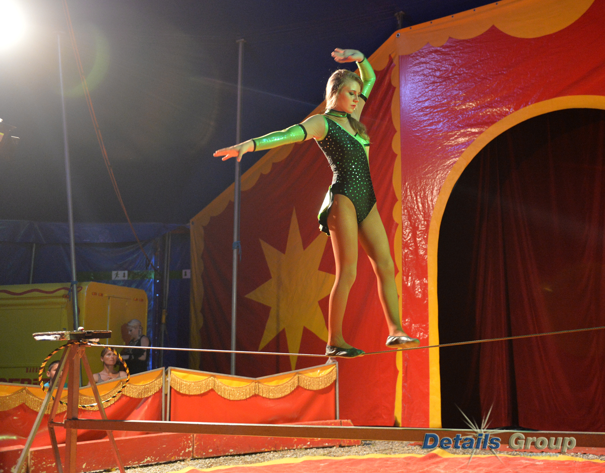

Tightrope Walking
inbox/ subsciptions
subscribe here

Tightrope Walking is performed by Mrs Heard, a professional funambulism, is the skill of walking along a thin wire or rope. Performer has skill of maintaining balance while walking along a tensioned wire between two points.
(Back to main page)
Address: 13500 Camino Del Sur, San Diego, CA 92129